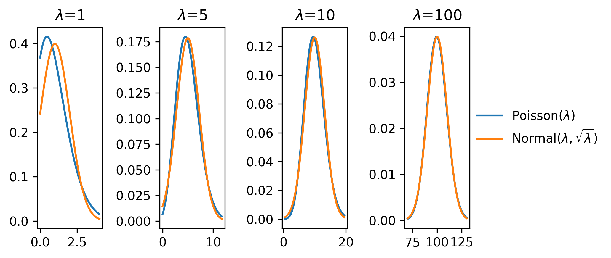
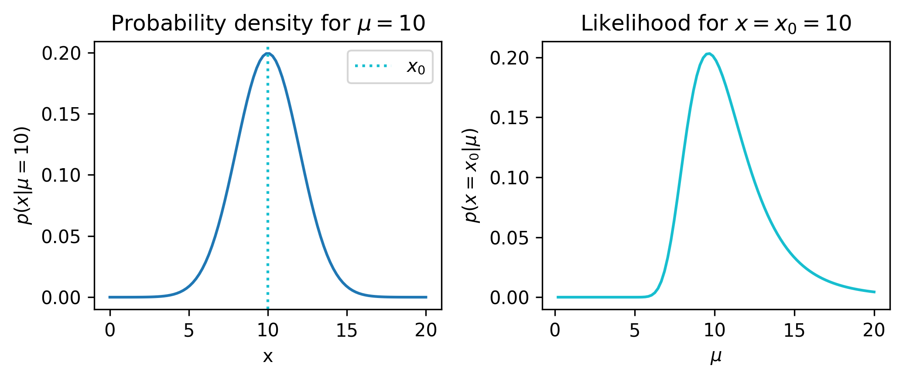
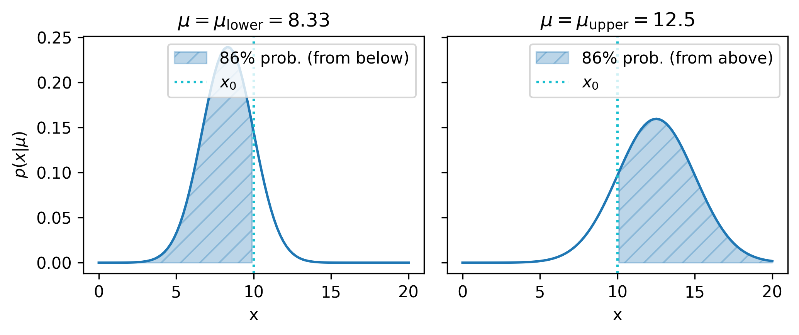
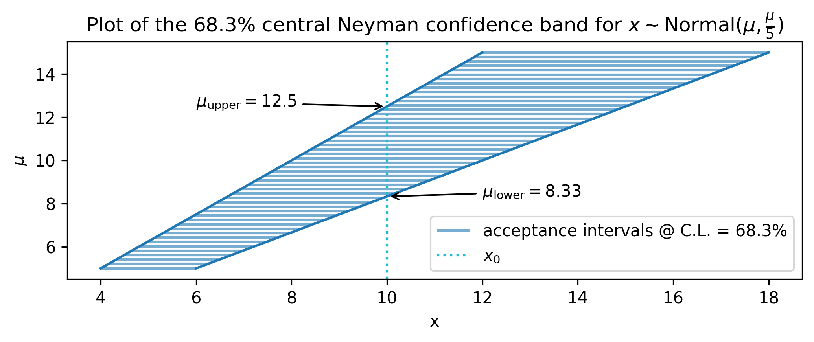
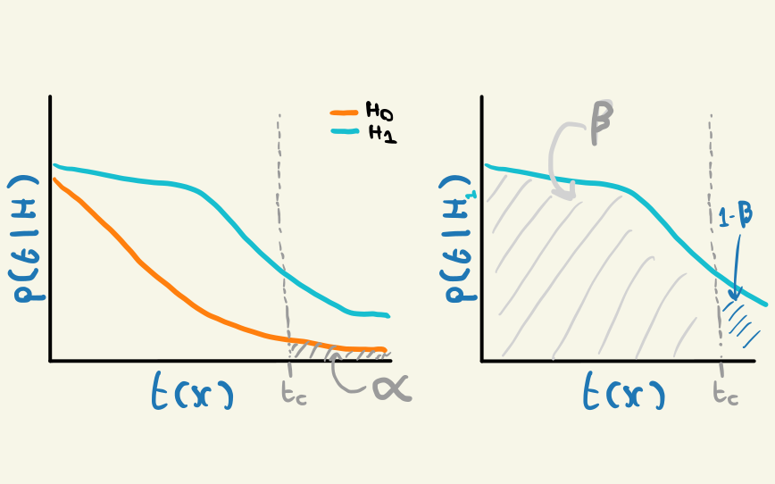

2 Probability and Statistics, in theory
It must be said that I have no desire to subject you, the reader, to the same philosophical torment that I have undergone in my pursuit of clarity of this topic, which I could not even claim to have reached. Moreover, given that this is an experimental physics thesis, it is exceedingly likely that you are a pragmatist, and wish to move swiftly on to the sections that may be useful to your life. Nonetheless, I’d like you to allow me the courtesy of proposing that there may in fact be something truly useful in revisiting these foundations, if only to reaffirm their non-utility.
For this section, my most heavily used and recommended resource is Cousins (2018), which I heard Bob himself refer to in a post-PHYSTAT chatgit z as his “life’s work”. Do give it a read – so many useful gems by someone who took a lot of time to build bridges between science and statistics!
2.1 Probability, distributions, and likelihood
Both the pre-amble to and the beginning of my PhD studies were decorated with thoughts on the nature of probability. At the time, I had just come out of a Masters degree project that involved the application of nested sampling (Skilling 2006) to infer the momenta of invisible neutrinos. This technique was invented by John Skilling, a prolific figure in the realm of Bayesian statistics, if only for his advocation thereof (if you’re planning to be indisposed for a time, you may find Skilling (2008) of interest as reading material, but do make sure to dilute it with things like Senn (2011) and Mayo (2018)). This started me down a rabbit hole on the much-contended topic of the definition of probability. It turned out the topic was vast, with arguments both mathematical and philosophical dating back many hundreds of years, many of which are still alive in the present day. Of this, I was particularly surprised — my undergraduate courses had spent a mere ten minutes or so on the subject, and I thought I understood it perfectly well given the time allocated! “Surely”, I mused in confusion, “probability, as I’ve encountered it both intuitively and mathematically, is just
\[ P(A) = \frac{\mathrm{number~of~occurrences~of~}A}{\mathrm{total~number~of~occurrences}}~, \tag{2.1}\]
right?”
Alas, the contentious nature of humanity would not allow me such a privilege. However, it is from this place of existential angst that we shall proceed, and uncover where this definition of probability encounters its limits (but also where it is useful).
2.1.1 Axioms of probability theory
For probability \(P\) (whatever you think it means), and possible states of an event \(\Omega\), we can say for \(A \in \Omega\):
- \(P(A) \geqslant 0\) always
- \(P(\Omega) = 1\) (at least one event will occur)
- The union (\(\cup\)) of variables \(P(A \cup B \cup C) = P(A) + P(B) + P(C)\) for mutually exclusive events \(A,B,C \in \Omega\) (i.e. only if they cannot occur at the same time)
The next notion to cover is that of conditional probability:
\[ P(A \cap B) = P(A | B)P(B)~. \tag{2.2}\]
Depending on whose axioms you follow, this quantity may be either derived (as in (Shafer and Vovk 2006)) or axiomatically stated (as in (Finetti 1970)). We can also expand this definition generally to include as many variables as we want, e.g. for 3 variables:
\[ P(A \cap B \cap) = P(A \cap C | B)P(B) = P(A| C,B)P(C|B)P(B)~, \]
and then for N variables:
\[ P(\Cap_{i=1}^N X_i) = P(X_1 | X_2, ..., X_N)P(X_2 | X_3, ..., X_N)\dots P(X_{N-1} | X_N)P(X_N) \]
\[ \Rightarrow = \prod_{i=1}^N P(X_i | X_{j > i})~, \tag{2.3}\]
where \(X_{j > i}\) represents the set of all \(X_j\) for which \(j >i\). This is known as the probability chain rule.
The axioms above lead to several other properties. For instance, the notion of conditional probability leads to the equation known as Bayes’ Theorem:
\[ P(A\cap B) = \frac{P(A|B)}{P(B)};\qquad P(B\cap A) = \frac{P(B|A)}{P(A)} \] \[ \Rightarrow P(A|B)P(A) = P(B|A)P(B)~, \tag{2.4}\]
since the notion of “and” (\(\cap\)) is not position-dependent, i.e. \(P(A\cap B) = P(B\cap A)\). This equation allows for the inversion of conditional probability, as long as we can provide the individual probabilities for \(A\) and \(B\). For example, the age-old situation of \(P(\mathrm{positive~test} | \mathrm{have~disease})\) versus \(P(\mathrm{have~disease} | \mathrm{positive~test})\). See (Cousins 2018) (and countless other introductions to probability) for a worked example along these lines.
Another important notion is that of independence:
- For independent events \(A,B\), \(P(A | B) = P(A)\) (i.e. their venn diagrams don’t overlap, so the occurrence of \(B\) cannot influence \(A\))
- This also implies \(P(A\cap B) = P(A)P(B)\)
Independence is an important assumption for HEP – we assume that events in our particle colliders occur without influencing each other. This assumption fundamentally changes any modelling we do of a collider physics process in a probabilistic sense, as it reduces the modelling to event-level probabilities (and the joint distribution over all events is recovered through multiplication as above).
2.1.2 Interpretations of \(P\)
The previous section discussed axioms and properties for probability \(P\) that hold regardless of interpretation. However, when we start to give meaning to \(A\), \(B\), \(\Omega\) etc, this can pose issues. For something like a coin flip, this isn’t too much of an issue – we can ask what the chances of observing the number of occurrences of \(A\) = heads or \(B\) = tails in some number of experiments \(N\). This is known as the frequentist interpretation of \(P\) – literally the frequency of that possible outcome. But what if, for example, I let \(A\) = “The sky is blue right now”? Clearly it will be blue or it won’t be blue, so you’d imagine that perhaps the probability is 1/2 if we use the definition of \(P\) in Equation 2.1. This isn’t particularly useful though – since I said now, there’s only one data point we could ever take, and that would be to look at the sky. There’s no way to take into account the fact that we may live in a very rainy city during winter, or if the sun exploded (I hope it didn’t do that yet).
The reason we faced issues there is because we tried to assign a probability to a fact. Similar questions could look like “what is the probability that the Higgs Boson exists?”, or “what are the odds of the next prime minister of the U.K. being a walrus?” – they’re all things that will either be true or untrue. We may like to make some probabilistic statements about these facts though (I’m particularly interested in the chances of the latter question): to do this, we need to shift our interpretation of \(P\) to a personalistic degree of belief. This is known as the Bayesian interpretation of probability.
Now, doing things the Bayesian way doesn’t mean we assign probabilites to facts with no reason (though we are free to do so). We end up incorporating prior information on these facts, e.g. the probability of it raining generally in your area, through Bayes’ theorem in Equation 2.4 (\(P(A)\) and \(P(B)\) could play that role). Note, however, that Bayes’ theorem stems from the axioms of probability, and does not require Bayesian \(P\). It’s unfortunate that Bayesian and Bayes’ theorem are named as such, otherwise this would be clearer. Bayesian inference does, however, tend to use Bayes’ theorem for conditional inversion. See Section 2.3.5 for more on this.
2.1.3 Probability density
We now shift our discussion from the big \(P\) to the small \(p\), which is used to indicate the probability density function (pdf), defined implicitly through
\[ P(a \leqslant X \leqslant b) = \int_{a}^{b} p_X(x') dx'~. \]
Here, we’re using capital letters for random variables (the thing that follows the distribution), and realizations of that random variable are in lowercase letters. We can also define the cumulative density function (cdf), defined for random variable \(X\) as \(P(X \leq x)\). We can then write this in terms of the probability density function:
\[ P(X \leqslant x) = \int_{-\infty}^{x} p(x') dx'~. \]
This gives us the relation
\[ p_X(x) = \frac{dP(X \leqslant x)}{dx}~. \]
Pretty much all the same relations for big \(P\) also hold for small \(p\), which can be attributed to many reasons (it’s a rabbit hole involving measure theory and similar concepts – see Shafer and Vovk (2006) for more, it’s well-written!)
2.1.3.1 i.i.d.
A common expression you’ll see about a set of random variables is that they’re i.i.d., which stands for independently and identically distributed. This refers to the situation when
- Samples are drawn from the same probability distribution
- Each sample drawn (random variable) is independent from any other sample
An example is just drawing some random sample, e.g. np.random.uniform(size=10). That would be 10 i.i.d. samples from a uniform distribution.
2.1.4 Change of variables formula
If the distribution over \(x\) is \(p(x)\), what’s the distribution over \(\log(x)\)? Or, more generally, any monotonic function \(y = f(x)\) with corresponding random variable \(Y\)? Let’s look at the cdf:
\[ P(Y \leqslant y) = P(f(X) \leqslant y) = P(X \leqslant f^{-1}(y))~. \]
Differentiating both sides with respect to \(y\) to recover the pdfs:
\[ \frac{dP(Y \leqslant y)}{dy} = \frac{dP(X \leqslant f^{-1}(y))}{df^{-1}(y)}\frac{df^{-1}(y)}{dy}~~~ \Rightarrow ~p_Y(y) = p_X(f^{-1}(y)) \left|\frac{df^{-1}(y)}{dy}\right|~, \]
where we’ve inserted the absolute value to ensure this holds for both monotonically increasing and decreasing functions. The multi-dimensional version of this involves the determinant of the Jacobian matrix, defined for a function involving vectors \(\mathbf{y}=f(\mathbf{x})\) as
\[ J_f(\mathbf{x}) = f'(\mathbf{x}) = \left[\begin{array}{ccc}\frac{\partial y_{1}}{\partial x_{1}} & \cdots & \frac{\partial y_{1}}{\partial x_{n}} \\\vdots & \ddots & \vdots \\\frac{\partial y_{m}}{\partial x_{1}} & \cdots & \frac{\partial y_{m}}{\partial x_{n}}\end{array}\right]~. \tag{2.5}\]
This leads to the formula
\[ p_Y(\mathbf{y}) = p_X(f^{-1}(\mathbf{y})) \left|\det{J_{f^{-1}}(\mathbf{y})} \right|~, \tag{2.6}\]
which can be thought of as manipulating the space in the \(x\)-\(y\) plane (since determinants are akin to volume transforms) to make the probabilities match. This will be particularly useful when we come to look at normalizing flows.
2.1.5 Expectation values
The expectation value for a quantity \(f(x)\) over a distribution \(p_X(x)\) is defined as
\[ \mathbb{E}_{p_X}(f(x)) = \int_{-\infty}^{+\infty} f(x) p_X(x) dx~, \]
which I loosely think of as the average value that \(f(x)\) will have assuming probability distribution \(p_X\). Expectation values are useful to extract a definite value from a probability distribution, with many useful quantities such as the mean, variance, skew, and kurtosis all being able to be written in terms of expectation values (see more on this and the “moments” of a distribution in this thoughtful blog post).
2.1.6 Commonly used distributions
2.1.6.1 Normal
We define the normal distribution – commonly known as a “Gaussian” in HEP – with the pdf
\[ p(x | \mu, \sigma) = \frac{1}{\sigma \sqrt{2\pi} } e^{-\frac{1}{2}\left(\frac{x-\mu}{\sigma}\right)^2} .\]
The parameters \(\mu\) and \(\sigma\) characterize the location and the width of the normal distribution respectively. In shorthand, we’ll denote this as \(\mathrm{Normal}(\mu, \sigma)\), or maybe also including the input \(x\) via \(\mathrm{Normal}(x|\mu, \sigma)\).
The normal distribution is exceedingly useful as a modelling tool due to the central limit theorem, which states that the distribution of the sum (and consequently the mean) of i.i.d. random variables calculated on a sample tends to a normal distribution as the size of your sample goes to infinity. This type of distribution is known as a sampling distribution as it involves a quantity that is computed on a per-sample basis.
The specific normal distribution you end up with from the cental limit theorem is \(\mathrm{Normal}(\bar{\mu}, \bar{\sigma}/\sqrt{n})\), where \(\bar{\mu}\) and \(\bar{\sigma}\) are the sample mean and standard deviation respectively. Part of the power of the central limit theorem is that it works regardless of the shape of the original distribution! So it’s pretty impressive that we can get a good idea of how the distribution of the data mean looks, even with a finite sample size.
2.1.6.2 Poisson
Another very common distribution in HEP is the Poisson distribution. It’s useful when you want to model the occurrence rate of an event (and what happens on average). It’s defined for independent events \(n\) as
\[p(n | \lambda) = \frac{\lambda^n e^{-\lambda}}{n!}~,\]
where \(\lambda\) is termed the expected number of events (both the mean and variance turn out to be \(\lambda\)). We’ll denote this using the shorthand of \(\mathrm{Poisson}(\lambda)\).
One commonly used notion is the approximation of a Poisson distribution with a normal distribution with mean \(\lambda\) and variance \(\sqrt{\lambda}\) for large \(\lambda\). We can see this demonstrated in Figure 2.1, where from \(\lambda \approx 10\), we start to observe the alignment of the shapes of the Poisson and normal distributions. This is the origin of the \(\sqrt{n}\) errors that are often quoted on histogram bars of size \(n\) – it assumes they are Poisson modelled (as we do when modelling likelihood functions in HEP), and if \(n\) is around 10 or more, then we assign \(\sqrt{n}\) as a notion of the standard deviation on the bin count \(n\).
2.1.6.3 Uniform
The uniform distribution is a very simple construct, with pdf
\[ p(x | a, b) = \begin{cases} \frac{1}{b-a},& \text{if } x\in [a,b]\\ 0, & \text{otherwise} \end{cases} ~. \]
We’ll use the shorthand of \(\mathrm{Uniform}(a,b)\). When we refer to drawing values “at random”, we’re probably referring to drawing \(x\sim \mathrm{Uniform}(0,1)\).
2.1.7 Nuisance parameters
When our probability model \(p(x|\mu)\) fails to describe the data generating process well, we may add more parameters to our model in order to make it more flexible, and thereby hopefully increase the accuracy of the model. As an example, this could be a parameter that controls the shape of the overall distribution in a way that models a physical effect. Such parameters are called nuisance parameters, as they exist only to add model flexibility (we’re not interested in inferring their true values), and are then a nuisance to deal (increased dimensionality of any downstream calculations). If we denote the set of nuisance parameters of a model as \(\theta\), our likelihood then reads \(p(x|\mu,\theta)\).
If we have some prior knowledge about \(\theta\), e.g. from a previous experiment that measured the physical event on data \(y\) (termed “auxillary data” since it isn’t directly to do with our main experiment), it would be useful to use that to constrain possible values \(\theta\) could take. In a Bayesian setting, this prior knowledge can be added when defining the prior distribution for that parameter at inference time. It’s also possible to bake this information into the probability model itself through constructing the joint likelihood of both experiments:
\[p(x, y|\mu,\theta) = p(x|\mu,\theta)p(y|\theta) ~.\]
In the case where the distribution \(p(y|\theta)\) isn’t readily available, it’s common practice in HEP to approximate it using a distribution that models the shape of the data \(y\) to some reasonable degree of accuracy, e.g. with a normal distribution of mean \(\theta\) (this will be discussed more later).
To extract information about parameters of interest \(\mu\) from a likelihood that involves \(\theta\), we need to somehow lose our dependence on \(\theta\) to recover a distribution that just depends on \(\mu\). The ways of doing this are as follows:
Profiling: for each value of \(\mu\), find the best fit value of \(\theta\), leading to
\[ p_{\mathrm{profile}}(x|\mu) = p(x | \mu, \hat{\hat{\theta}});\quad\hat{\hat{\theta}}=\underset{\theta}{\mathrm{argmax}}(p(x|\mu,\theta))~.\]
Here, we’re essentially picking our best guess of the value of the nuisance parameters given a specified \(\mu\). The profile likelihood will obviously be useful in the limit of \(\hat{\hat{\theta}}\) being close to the true values of the nuisance parameters, but this isn’t guaranteed.
Marginalization: we simply integrate away the dependence on the nuisance parameters entirely:
\[p_{\mathrm{marginal}}(x|\mu) = \int_{-\infty}^{+\infty} p(x| \mu, \theta) p(\theta) d\theta ~.\]
Note that this requires a specification of a prior pdf \(p(\theta)\). Marginalizing is then a form of averaging of the likelihood and prior across the domain of \(\theta\). Despite this technically being a Bayesian procedure due to the specification of the prior, we’re free to use the resulting model in a frequentist way – this is just a model specification step.
2.2 Metrics of probability
2.2.1 Fisher information and the Cramér–Rao bound
A useful quantity in many ways is the Fisher information matrix. We can write the definition for an element of this matrix for a likelihood function \(p(x ; \theta)\) (\(\theta = \{\theta_i\}\)) as
\[ \mathcal{I}(\theta)_{ij}=-\frac{\partial^2}{\partial \theta_i \partial \theta_j} \log p(x ; \theta)~. \]
We’ll focus on the fact that you can extract parameter uncertainty estimates from this quantity. How? We turn to the Cramér–Rao bound, which states that if we have an unbiased estimator for the likelihood parameters \(\hat{\theta}\), the Fisher information matrix \(\mathcal{I}(\theta)\) satisfies
\[ \Sigma_{\hat{\theta}^2} \geqslant [\mathcal{I}(\theta)]^{-1}~, \tag{2.7}\]
where \(\Sigma_{\hat{\theta}}^2\) is the covariance matrix for the fitted parameters \(\hat{\theta}\). In the asymptotic limit, the maximum likelihood estimator will attain this lower bound, and satisfies
\[ \sqrt{n}(\hat{\theta}-\theta) \rightarrow \text{Normal}(0, [\mathcal{I}(\theta)]^{-1})~ \]
for sample size \(n\). A useful thing about this is that the diagonal elements of the inverse Fisher information will then correspond to the variances of the individual parameters, i.e. \([\mathcal{I}(\theta)]^{-1}_{ii} = \sigma_{\theta_i}^2\). There are also many other interesting quantities we can extract from this equivalence, including the generalized variance, which is the determinant of the covariance matrix (or determinant of the inverse Fisher information). These quantities will see a little use later on.
2.2.2 Kullback-Leibler divergence
The Kullback-Leibler divergence (KL divergence) is a commonly used quantity in machine learning and information theory to represent the “distance” between a probability distribution \(p(x)\) and an estimation of that distribution \(q(x)\). Related to things like entropy, it can be thought of as the loss of information from using \(q\) as an approximation to \(p\). It’s defined for continuous \(x\) as
\[ D_{KL}(p(x) \| q(x))=\int_{-\infty}^{\infty} p(x) \ln \frac{p(x)}{q(x)} dx~. \tag{2.8}\]
One interesting thing to note is that this is not a distance in the typical sense, since it’s an asymmetric number, i.e. \(D_{KL}(p(x) \| q(x)) \neq D_{KL}(q(x) \| p(x))\).
2.3 Inference
Statistical inference can be viewed as the inverse of the data generating process. Let’s look at an example.
Say that the Lorax created the Earth. Moreover, say that he did so by rolling a six-sided die, and putting the result of the die into a World Generating Machine, which merely requires a single number as input. As a neutral party that cannot confirm the Lorax’s roll, but can definitely observe the outcome, we may wonder: assuming we have a model of the World Generating Machine, what number did the Lorax roll to produce all that we see around us today? Moreover, can we factor in our prior suspicion that a Lorax rolled a die to select a number at random?
Put in a more general way: given a parametrized model of the world around us, potential suspicions about the parameters themselves, and some data that could be described by that model, which values of the parameters could have produced the data? Moreover, is the model a good description of the data at all? Could another model have described the data more accurately? These type of questions fall within the umbrella of statistical inference.
Let us add a layer of specificity to our questions. The key inquiries that are typically dealt with through inference are:
- Point estimation: What value(s) of my model parameters best describe the data?
- Interval estimation: How can I specify a plausible range for my model parameters based on the data they attempt to describe? (One can obtain a symbiotic relation between interval and point estimation by viewing a point estimate as the limit of shrinking intervals)
- Hypothesis testing: Given a model of the data generating process, to what extent does it describe the data when…
- …compared to another model with different form?
- …compared to the same model with different parameters?
- …not being compared to any particular alternative? (this has the particular name of the goodness-of-fit test)
These questions are where the schools of probability see their strongest divide; whether we can assign probabilities to facts – e.g. what are the odds that neutrinos have masses – fundamentally alters the kind of question we can ask of our model/data. For example, instead of a point estimate of the neutrino masses, a Bayesian procedure could infer their distribution given the data (and some prior beliefs about their values), also termed the posterior distribution. Similarly, Bayesian intervals can say “what are the chances the true parameter value lies in this interval” (which frequentist procedures can not determine), and hypothesis testing can evaluate the probability of the hypothesis itself.
However, these Bayesian procedures undertake the weight of the specification of a prior distribution for all of these quantities, which will (in the limited data regime, a.k.a. real life) strongly affect the result. Moreover, the frequentist procedures are indeed still useful for making exact, even if convoluted, statements about the model in the presence of observed data.
A brief aside: you’ll notice that the common thread throughout these statements is the model. As like many statistics-adjacent HEP researchers before me, I will emphasize that the likelihood model is the most important ingredient for any inference procedure. In the limit of a well-designed model and sufficient data, even a room full of the most polarized statisticians, hopelessly resigned to their particular school of thought, will agree on basic statements about the validity of a hypothesis. Even failing this,a Bayesian would not ignore a \(p\)-value of 0.9, and a frequentist would likewise raise their eyebrows at a flat or sharp posterior with low prior sensitivity. But since they both care about the model, any and all effort that could be spent arguing over inferencial philosophy may likely be better placed in talking to a domain expert for the problems you care about.
But enough with the aside, or I’ll be subject to the same criticism of misplaced effort. Let’s review the different methods that implement answers to our questions of inference.
2.3.1 Point estimation
Given a probability model \(p(x|\mu)\) for data \(x\) and model parameters \(\mu\), the most common method of estimating parameter values compatible with observed data \(x_0\) in the frequentist paradigm is the maximum likelihood estimate (MLE), defined as
\[ \hat{\mu} = \underset{\mu}{\mathrm{argmax}}(p(x_0|\mu))~.\]
In practice, we calculate \(\hat{\mu}\) with an optimization procedure, e.g. through the (L)BGFS algorithm for unconstrained optimization (Fletcher 1987). Since most optimization algorithms target minimization (purely conventional), we often frame this equivalently as
\[ \hat{\mu} = \underset{\mu}{\mathrm{argmin}} (-2\ln p(x_0|\mu))~.\]
The prefactor of 2 leads to some nice theoretical properties via Wilk’s theorem, but that’s a later discussion (the 2 doesn’t matter for optimization purposes). We use calculate the MLE lot in HEP for a few reasons:
- It has a Normal sampling distribution in the asymptotic limit (so we can easily quote errors using a sample standard deviation)
- In the finite data regime, the MLE is effective for many distributions we care about (e.g. Normal, Poisson)
- Simple to understand and debug!
Other methods of point estimation could be as simple as quoting the mode (value with highest density), median (value that partitions the distribution into equal segments of probability), or arithmetic mean (sum of the data divided by the size of the data). These are more useful in the absence of a good probability model.
2.3.2 Confidence intervals
A significant part of my early PhD days was spent trying to understand the confidence interval. I will do my best to try and make you bang your head against the wall a little less than me (metaphorically, I hope).
We begin with some statistic of the observed data \(x\). A confidence interval is then a statement about values of a model parameter \(\mu\) for which the observed data is considered “not extreme”. Values of \(\mu\) outside the interval are then those for which the observed data is “extreme”. We have a couple of ingredients to unpack here:
- How do we define a notion of “extreme” for the data?
- How do we construct the interval itself to satisfy this property (namely that the values of \(\mu\) consistently treat \(x\) as extreme or not)?
For the first point, there’s a two-part answer: we need a way to order the data with a notion of extremity (rank it from least to most extreme), and then also determine the cutoff for which points are considered extreme or not. This cutoff isn’t going to be by value, but by proportion; we’ll place our yardstick such that all values of \(x\) considered not extreme contain the majority of the probability (area under \(p(x|\mu)\)). How much? That’s known as the confidence level (\(\mathrm{C.L.}\)). Values considered extreme then occupy the other \(1-\mathrm{C.L.}\) of the probability. We then determine those values of \(\mu\) which produce distributions that satisfy this requirement when the yardstick is in the same place as the observed data \(x_0\). We’ll see some examples of this below.
For 1-D \(x\), we look at some simple orderings: - Descending: large \(x\) is not considered extreme, and small \(x\) is. The corresponding confidence interval is \([\mu_{\mathrm{lower}}, +\infty]\), where \(\mu_{\mathrm{lower}}\) is known as a lower limit on \(\mu\). - Ascending: small \(x\) is now not extreme, but large \(x\) is. The corresponding confidence interval is \([-\infty, \mu_{\mathrm{upper}}]\), where \(\mu_{\mathrm{upper}}\) is known as an upper limit on \(\mu\).
We can also look at a central ordering, which produces an interval that can be constructed at a given confidence level \(\mathrm{C.L.}\) through calculating a lower and upper limit \([\mu_{\mathrm{lower}}, \mu_{\mathrm{upper}}]\), each with a confidence level of \(1-(1-\mathrm{C.L.})/2\) (which guarantees that the central interval contains \(\mathrm{C.L.}\) of the probability).
Let’s make this concrete with an example: we’ll take the same distribution studied in (Cousins 2018) (Section 6.4), where we have a normal distribution with width parametrized as 1/5th of the mean:
\[x \sim \mathrm{Normal}(\mu, \frac{\mu}{5}).\]
From here, we can examime the pdf (at \(\mu=10\) arbitrarily). We can also view the likelihood if we say we observed data \(x_0=10\). Both are shown in Figure 2.2.

Let’s now use the aforementioned method to construct a central confidence interval for \(\mu\), at say a confidence level of 68.3%. We then divide up this confidence level into the lower and upper limits – each will be set with a confidence level of \(1-(1-0.683)/2 = 84.15\%\), such that the extreme data occupies one minus that amount (15.95%) of the probability on each side of the central interval, giving us back the desired 68.3% between the upper and lower limits.
Finding these limits can be viewed as an optimization problem: we just need to choose \(\mu\) such that the area under \(p(x|\mu)\) is equal to 84.15% below \(x_0\) for lower limits, and above \(x_0\) for upper limits. We can frame this objective using the cumulative density function – the cdf evaluated at \(x_0\) must be equal to 0.843 for lower limits, and equal to 1-0.843 for upper limits. As this thesis focuses on methods relating to gradient descent, we can use this to find our central interval, by optimizing \(\mu\) with respect to a mean-squared error loss between the cdf and the relevant probability share. Doing this for our example gives us the limits [8.332, 12.502] that form a central confidence interval for \(\mu\).
We can visualize the probability density for each of \(\mu_{\mathrm{lower}}\) and \(\mu_{\mathrm{upper}}\), which should help cement the idea of capturing some amount of the probability up to \(x_0\) based on an ordering of \(x\):

Neyman construction
A different way to build confidence intervals (that generalizes to multiple dimensions) can be found in the form of the Neyman construction. Here, we start by constructing an acceptance interval for \(x\). Given an ordering of \(x\), a desired confidence level \(\mathrm{C.L.}\), and a value of \(\mu\), an acceptance interval for \(x\) is defined such that the probability contained between \([x_1, x_2]\) is equal to \(\mathrm{C.L.}\). In equation form:
\[ [x_1, x_2]~s.t.~P(x\in[x_1,x_2] | \mu) = \mathrm{C.L.} .\]
The endpoints \([x_1, x_2]\) are well defined because we decided on an ordering for \(x\) (does not need to be central!), with any data outside these endpoints designated as “extreme” with respect to that ordering.
We can then draw the acceptance intervals for many values of \(\mu\). This can be visualized in a plot of \(\mu\) against \(x\) as a set of horizontal lines in \(x\) corresponding to the acceptance intervals. How do we turn this into an interval on values of \(\mu\)? We just draw a vertical line corresponding to our observed data \(x_0\), and choose the values of \(\mu\) that lie where the line intercepts the acceptance intervals for \(x\). All of this is shown in Figure 2.4.

Even though the appearance of the plot in Figure 2.4 makes it look so, it is completely not required that \(\mu\) be 1-D! For example, \(\mu\) could easily have been 2-D here, and then the confidence interval in 2-D could still be constructed by the points at which the observed data (which would be the plane defined by \(x_0=10\)) meets the acceptance intervals, even if this stretches out over other parameter dimensions. What happens if that multi-dimensional space becomes even larger, even if we don’t care about some of the parameters? We’ll look at new ordering principle for this.
Likelihood ratio ordering
A fourth ordering principle for the data was proposed by Feldman & Cousins in (Feldman and Cousins 1998), and is based on the likelihood ratio
\[ R(x, \mu) = \frac{p(x|\mu)}{p(x| \hat{\mu})} ,\]
where \(\hat{\mu}\) represents the best-fit value of \(\mu\). Commonly used in HEP, it appeals to intuition since there’s then a correspondence between the notion of “extreme” and low probability density (relative to the maximum). Moreover, since it’s a ratio, a change in variables from \(x\) to \(f(x)\) would lead to the Jacobians cancelling in \(R\), making this ordering invariant to a change of metric. We can construct intervals ordered by \(R\) through the Neyman method as above.
Profiling
In the case where the likelihood parameters can be split into \([\mu, \theta]\), with \(\theta\) representing nuisance parameters, we can make this interval construction more feasable by using the profile likelihood ratio:
\[ \lambda(x, \mu) = \frac{p\left(x|\mu,\hat{\hat{\theta}}(\mu)\right)}{p\left(x| \hat{\mu}, \hat{\theta}\right)}, \tag{2.9}\]
where \(\hat{\hat{\theta}}(\mu)\) represents the fitted value of \(\theta\) when holding \(\mu\) fixed. Doing this reduces the dimensionality of the parameter space to just those of which we’re interested in (e.g. signal strength). However, coverage properties for intervals constructed in this way may vary, so need to have their sampling properties studied (see section 13 in (Cousins 2018)).
Coverage
Despite that a confidence interval is in values of \(\mu\), it’s an inherently data-dependent construct – you’ll get a different confidence interval for different observed data \(x_0\). The endpoints of the interval \([\mu_{\mathrm{lower}}, \mu_{\mathrm{upper}}]\) are consequently treated as random variables. The confidence level, then, is a property of the set of intervals that would be constructed over many experiments: if we sampled \(x\) from the true distribution many times with many experiments, and constructed a confidence interval using each sample with confidence level of 95%, then 95% of those intervals would contain (or cover) the true value of \(\mu\). The collection of these confidence intervals is called a confidence set, and we say that it has 95% coverage.
How do we know our confidence set has this property? Well, the Neyman confidence set has it by definition: if we think about just the single distribution at the true value \(\mu_T\), the Neyman procedure creates an acceptance interval such that the probability between \([x_1, x_2]\) is equal to the confidence level (say 95%). If we then do many experiments (i.e. sample \(x\sim p(x | \mu_T)\)), we know that 95% of the time, the dotted line representing the data point will lie within the acceptance interval of \(\mu_T\). Ah – this is exactly the requirement for \(\mu_T\) to be included in our confidence interval! It then follows that 95% of the intervals constructed will then include the true value of \(\mu\), corresponding exactly to when the observed data lies within the acceptance interval for \(\mu=\mu_T\).
This is all well and good, but may ring some alarm bells – we only have one interval in practice, right? Isn’t there a chance that we draw data such that the confidence interval falls in the 5% that don’t cover the true, unknown value of \(\mu\), and thereby contradicting the distribution that produced the data point?
In short, yes. But that doesn’t mean confidence intervals are useless – a single 95% interval is overwhelmingly more likely to contain the true parameter value than not. Remember: we’re always going to have inherent uncertainty on the statements we make on unknown true parameter values – this uncertainty is expressed as a probability distribution for Bayesian methods, and as a statement about sampling properties (results in the limit of many repeated experiments) for frequentist methods.
2.3.3 Frequentist hypothesis testing
Hypothesis testing gives us a framework to make qualitative statements about how extreme the observed data seems under a proposed theory, often in comparison to various alternatives. Note we use “extreme” in the same way as with confidence intervals, so we’re going to need to establish an ordering principle for the data. Let’s go into more detail.
Once again, we concern ourselves with a statistic of the data \(x\) and model parameters \(\mu\). Here we follow the conventions set out by Neyman (again) and Pearson in (Neyman and Pearson 1933), and start with the notion of a null hypothesis \(H_0\), which is the assumed default model for the data. One would often take this to be the Standard Model, for example. We then come up with an alternative hypothesis \(H_1\). In what way can \(H_0\) and \(H_1\) differ? We could have:
- Two totally separate probability models \(p_1(x | \mu_1)\) and \(p_2(x | \mu_2)\), which can differ in number of parameters and functional form
- A set of hypotheses within a probability model; \(p(x | \mu)\) induces a family of hypotheses parametrized by \(\mu\), for instance, with any two values of \(\mu\) potentially serving as \(H_0\) and \(H_1\)
A hypothesis at a point (e.g. \(p(x | \mu=0)\)) is known as a simple hypothesis, and a set of hypotheses (e.g. a second, unspecified model \(p_2(x | \mu)\), or \(p(x | \mu\neq0)\)) is known as a composite hypothesis. In HEP, we’re commonly testing a point null of \(H_0\) = Standard Model (\(p(x | \mu=0)\)) against a composite alternative of \(H_1\) = Something Else (\(p(x | \mu\neq0)\)). This poses a challenge from an optimality perspective that we’ll cover shortly.
So, how do we actually do the testing itself? We’ll need an ordering principle to rank data from least to most extreme. To do this, we usually concentrate on defining a good test statistic of the data \(t(x)\), then fix an ordering of \(t(x)\) ascending (but other orderings are possible, e.g. two-tailed tests are centrally ordered in \(t(x)\)). From there, we come up with a cutoff value \(t_c\) such that data with \(t > t_c\) is seen as extreme. The proportion of the probability held by these extreme values is known as the confidence level or test size \(\alpha\).
Under which distribution is this ordering and designation of \(\alpha\) performed? We do this with the pdf of the test statistic under the null hypothesis, \(p(t(x)|H_0)\). Importantly, this distribution may not be known to us, and we may have to estimate it by sampling many values of \(x \sim p(x|H_0)\), then calculate \(t(x)\) for all of them, and estimate the density of the result. Moreover, without this distribution, we don’t know how to place our cutoff \(t_c\) so it contains a proportion \(\alpha\) of the data considered most extreme!
One more thing we can deduce from the above: our statements on how extreme the observed data appears are fundamentally under the assumption that \(H_0\) is true. Keep this in mind!
If the observed data \(x_0\) falls in the extreme proportion of possible values, i.e. \(t(x_0) > t_c\), we then say we reject \(H_0\) compared to \(H_1\). Note that this does not mean we accept \(H_1\)! For that, we’d have to look at decision theory, which involves establishing the notion of probabilities for \(H_0\) and \(H_1\), which is beyond the scope of this frequentist testing framework (a more detailed discussion can be found in e.g. (Cousins 2018), Section 3.4).
So if our testing revolves around \(H_0\), where does the alternative \(H_1\) come into play? We can see the presence of \(H_1\) in commonly used orderings, such as the likelihood ratio of the two hypothesis: \(t(x, \mu) = p(x | H_0)/p(x|H_1)\). Furthermore, we can define a measure of error in relation to \(H_1\): given \(H_1\) is true, what’s the probability of accepting \(H_0\), even when the data come from \(H_1\)? This quantity is known as \(\beta\) – a powerful test would have low \(\beta\), i.e. often rejects \(H_0\) in favour of \(H_1\) when it is true, leading to the quantity \(1-\beta\) being known as the power of a test.

When framing things in terms of error, we can see that the confidence level \(\alpha\) also represents an error: the probability of rejecting \(H_0\) given that it’s true. Why? If the observed data was truly generated from \(H_0\), it will fall in the extreme proportion of the data exactly \(\alpha\) of the time, since that’s the way we designated the proportions to begin with. This would lead to the erroneous statement of rejecting \(H_0\) (though we know this stops short of a decision on \(H_1\)). We can see a representation of both \(\alpha\) and \(\beta\) in Figure 2.5.
The quantities \(\alpha\) and \(\beta\) are often called type-I and type-II error respectively. I forget this all the time (in particular which type means what) so rarely use these names, but include them for completeness.
\(p\)-values
So we set up a test by choosing the size \(\alpha\), obtain the distribution for our chosen test statistic \(t(x)\), and calculate the cutoff value \(t_c\). What next? We’ll take our observed data \(x_0\), calculate \(t(x_0)\), and see if it lies past \(t_c\). If so, we’ll reject \(H_0\). If so, we’d maybe like to know by how much the data was incompatible with \(H_0\). This quantity is known as the \(p\)-value, and is just the area under \(p(t(x) | H_0)\), i.e.
\[ p_{x_0} = \int_{x_0}^{+\infty}p(t(x) | H_0) dx ~.\]
Note that the quantity \(p_{x}\) exists generally for \(x\) – this is just a rephrasing of the data into units that tell us how much of the test statistic distribution we’re enclosing to the right under \(H_0\). \(p_{x_0}\) is then this statement for the observed data.
We can then rephrase a hypothesis test as rejecting \(H_0\) when \(p_{x_0} < \alpha\), and accepting \(H_0\) otherwise. A low \(p\)-value is then a sign of low compatibility between the observed data and \(H_0\). (Here, my notation has come back to bite me… \(p_{x_0}\) is absolutely not the probability of \(x_0\)!!!)
Optimality
What defines an optimal test? Well, \(\alpha\) is specified prior to the test, so we’re left with maximizing the power \(1-\beta\). The task then becomes: given \(\alpha\), choose a test statistic \(t(x)\) such that the power \(1-\beta\) is maximized.
In the case where \(H_0\) and \(H_1\) are simple, the likelihood ratio is the optimal test statistic in the sense of power, which can be proved through the Neyman-Pearson Lemma (omitted here for the sake of brevity, though see a visual proof in (Cranmer 2020)).
When we have a composite hypothesis, things get trickier, since we’ve only worked out the best test statistic for two point hypotheses. Instead of most powerful test, we need to change our language: we want the uniformly most powerful test across the many point hypotheses contained within the composite hypothesis.
A proxy way to address this is the following: we know that the likelihood ratio is optimal for two point hypothesis. If we’re testing a point null (\(\mu=\mu_0\)) against a composite alternative (\(\mu \neq \mu_0\)), we can represent the alternative through the best-fit hypothesis to the observed data, i.e. estimate \(\hat{\mu}\) via maximum likelihood. We can then use the test statistic \(p(x | \mu_0) / p(x | \hat{\mu})\). This is exactly analogous to the use of a likelihood ratio ordering in confidence intervals!
2.3.4 Duality between hypothesis test and intervals
It was probably hard to watch the number of times I defined “extreme” in this very specific way that seems to apply to both intervals and tests, without commenting on how they’re similar or different. That’s because they’re one-to-one in many ways!
Say we make a \(\mathrm{C.L.}\) = 95% confidence interval of \([\mu_1, \mu_2]\) given an ordering principle/test statistic (e.g. likelihood ratio), a pdf \(p(x | \mu)\), and some observed data \(x_0\). This interval contains all values of \(\mu\) for which the observed data \(x_0\) is deemed not extreme. Given the same ordering principle, a hypothesis test of some particular \(\mu_0\) asks: does \(x_0\) lie in the extreme fraction of data \(\alpha = 1-\mathrm{C.L.}\) when \(\mu=\mu_0\)? This is the same thing as asking: does \(\mu_0\) lie in the confidence interval \([\mu_1, \mu_2]\)? If so, then the acceptance interval for \(p(x | \mu_0)\) will be intercepted by \(x_0\) – this would accept \(H_0\) in the testing framework, since \(x_0\) under assumption of \(\mu_0\) is not considered extreme.
I hope this is clear enough, it took me a little while to see initially! One can then invert a test to produce a related confidence interval, which just means taking the set of \(\mu\) that aren’t rejected in a test using the observed data:
\[ \{\mu: t(x_0, \mu) < t_c \} = \mathrm{confidence~interval~at~C.L.~of~}1-\alpha ~.\]
2.3.5 Bayesian procedures
I won’t talk much about the Bayesian methodology here since I didn’t explicitly use it in my PhD, but it’s worth mentioning for contrast. Moreover, if you’re a student within HEP reading this, I don’t want to make it seem like there’s only one way of doing things – there are analyses that use these methods, and I think they should be explored more! See something like (Sivia and Skilling 2006) for a comprehensive introduction.
As I’ve mentioned a few times, the Bayesian interpretation of probability admits distributions for facts; one can ask “how likely is supersymmetry?” or “what’s the distribution for my signal strength?” These questions are often answered via use of Bayes theorem, which states that for probability distribution \(p(\cdot)\), data \({x}\), and model parameters \({\mu} = \{ \mu_1, \mu_2, \dots, \mu_n\}\), \[ p({\mu}|{x}) = \frac{p({x}|{\mu})p({\mu})}{p({x})}~. \]
We call \(p({\mu}|{x})\) the joint posterior distribution of the parameters \({\mu}\), since it reflects our updated beliefs post-data. We know about the likelihood \(p(x|\mu)\), but \(p({\mu})\) (the product of the individual distributions \(p(\mu_i)\)) is a new player in the game: these are the prior distributions for each parameter, called as such to reflect our prior belief in their distributions. We need to incorporate this information to perform inference using this paradigm, which is often a difficult task to do faithfully (even when we want to claim ignorance). Finally, the normalizing factor \(p({x})\) is termed the model evidence, and is obtained by marginalizing out the model parameters:
\[ \mathrm{Evidence} = \int_\Omega p({x}|\mu)\times p(\mu)\,\mathrm{d}\mu \] over parameter domain \(\Omega\). Often, Bayesian computation only requires proportionality with respect to the parameters, so it’s common to just think of the equation
\[ \mathrm{Posterior} \propto \mathrm{Likelihood} \times \mathrm{Priors} \] as the defining equation of Bayesian inference, though the model evidence remains useful as a compatibility measure between data and likelihood.
One thing to note: Bayes theorem does not use the Bayesian definition of probability unless we decide to – it’s derived from the axioms of probability, and is thus invariant of interpretation. Using this theorem in a Bayesian way only holds when we have a true but unknown quantity (e.g. \(\mu\)) as the subject of our distribution, as is done here.
Armed with this equation, Bayesian procedures include:
- Posterior estimation (e.g. through Markov chain monte carlo and it’s variants)
- Can then perform point estimation via maximum a posteriori (the mode of the posterior)
- Credible intervals: in contrast to confidence intervals where the endpoints are random variables, \(\mu\) itself is now the random variable, and the interval is constructed such that it contains the true value \(\mu_T\) with some allocated probability.
- Hypothesis testing: Bayesian hypothesis tests do exist, and involve the model evidence; I won’t talk about them here.
- Evidence estimation, e.g. nested sampling (Skilling 2006), which also comes with a posterior estimate as a by-product.